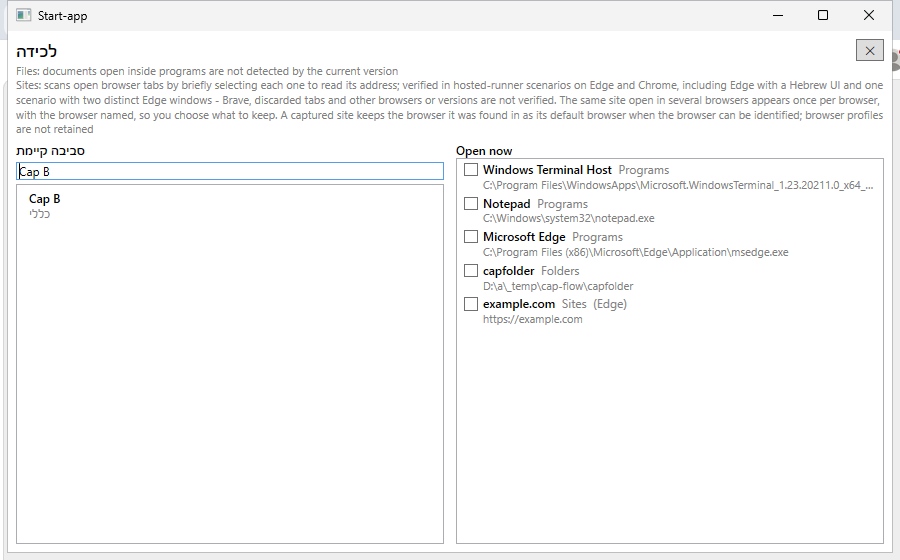
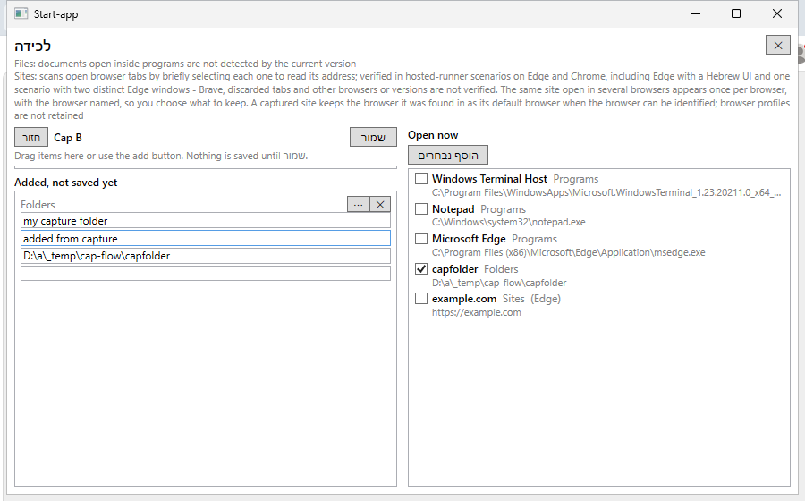
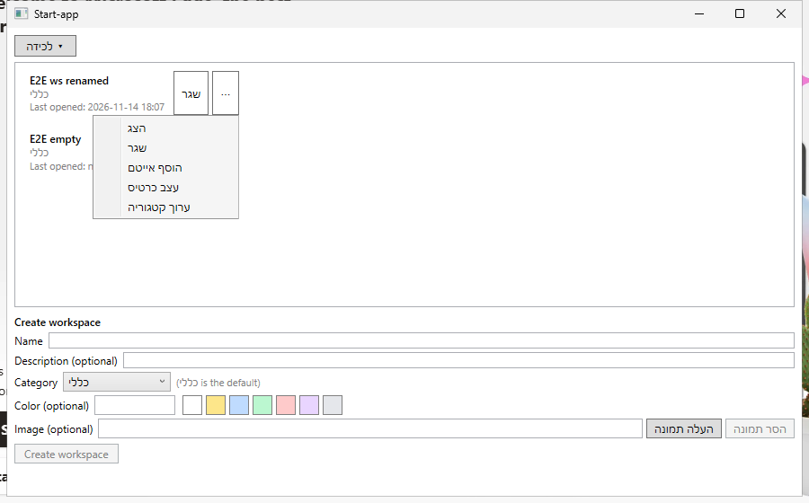

guía de usuario
guía Start-app
Paso a paso: crear un espacio de trabajo, agregar elementos, capturar, iniciar y guardar, con capturas de pantalla reales de la aplicación y con las limitaciones que es importante conocer.
Un prototipo de evaluación, no una versión estable
No se encontraron episodios. Pruebe con otra palabra o borre la búsqueda.
¿qué es? Start-app
Start-app Guarda programas, carpetas, archivos y enlaces bajo un nombre de entorno. La próxima vez que abras la computadora, el comando "Ejecutar" abre todos los elementos juntos, sin seleccionar cada uno nuevamente.
Esta guía acompaña toda la ruta: la pantalla principal, creando un entorno, añadiendo elementos manualmente o capturando, editando, lanzando y guardando. capítulo Limitaciones conocidas Centraliza en un solo lugar todo lo que no hace la aplicación.
Requisitos del sistema y de instalación.
El destino del paquete es Windows x64. No existe una versión verificada para Mac o Linux.
Se muestra la disponibilidad de descarga. en la pagina de inicio Y se actualiza automáticamente: cuando hay una versión del prototipo verificada, hay un enlace de descarga, junto con el número de versión, el tamaño del archivo y su sha256 para verificar antes de la instalación.
No se puede verificar una versión descargable en este momento. La descarga permanece desactivada.
detalles tecnicos
Activación después de la descarga
La descarga es un archivo ZIP, no un instalador. Después de descargar:
- Extraiga todos los archivos del ZIP a una carpeta.
- Abra la carpeta extraída y ejecute el
StartApp.App.exe. - Deje los archivos DLL y de tiempo de ejecución en la carpeta, al lado del archivo.
La aplicación incluye su entorno de ejecución, por lo que no es necesario instalar .NET por separado. Sin registro, cuenta o inicio de sesión. Los datos se guardan en un archivo local en%LOCALAPPDATA%\StartApp\store.json.
Qué se probó: este prototipo se creó como una aplicación Windows x64 independiente y se inició y cerró con éxito en un servidor Windows Server 2025 alojado. No se ha probado de forma independiente en Windows 11 doméstico y no existe un compromiso de versión mínima de Windows. No hay garantía de que no aparezcan advertencias de seguridad o alertas de software antivirus.
La pantalla principal: la vista del entorno.
En la parte superior de la pantalla se encuentra la lista de entornos. Cada tarjeta muestra el nombre, la descripción, la categoría, el color y la imagen elegidos, la fecha de creación y la última apertura. La fecha de última apertura se actualiza al iniciar un entorno, no al abrir un elemento individual.
Cada tarjeta tiene un botón "Iniciar" y un menú "..." con acciones adicionales. Debajo de la lista hay un formulario para crear un nuevo entorno y en la esquina hay un acceso a la pantalla de captura.

Creando un nuevo ambiente de trabajo
En el formulario de creación, el nombre es obligatorio. La categoría predeterminada es "General" y puede elegir el color y la imagen de la tarjeta. La descripción es opcional. Después de guardar, aparece una confirmación de que los datos se han guardado.

Si intenta iniciar un entorno que aún no tiene elementos, aparece un mensaje que le dirige a los detalles del entorno para agregar elementos.

Agregar elementos manualmente
En la pantalla de detalles del entorno, agregue elementos de cuatro tipos: sitio, archivo, carpeta y software. A cada artículo se le puede dar su propio nombre y descripción. Las rutas locales requieren una ruta completa de Windows, no un alias corto de software.

Los elementos se agrupan en la pantalla por tipo: sitios web, carpetas, archivos y software. Cada línea tiene un botón de edición y un menú de acciones.

Captura: escaneo, selección y duplicación
La captura escanea lo que está abierto ahora: programas y Explorador de archivos de Windows, y en el navegador la barra de direcciones. La fuente del navegador conoce Chrome, Edge y Brave; Actualmente no existe una matriz de compatibilidad completa para cada navegador y versión. El escaneo puede tardar hasta 10 segundos.
Los resultados se muestran para su selección antes de guardarlos. Puede crear un nuevo entorno a partir de ellos o agregarlos a un entorno existente, con una búsqueda que lo ubique.

Al crear un nuevo entorno, los elementos se marcan de forma predeterminada. Al agregar a un entorno existente: sin marcas, la acción es "Agregar todo", y con marcas, "Agregar seleccionados". Las duplicaciones con respecto a lo que ya está guardado en el entorno requieren aprobación. Las adiciones de pantalla en paralelo permanecen temporales hasta que haga clic en Guardar.

Un sitio capturado también guarda el navegador desde el que se encontró, cuando se puede identificar.

Editar entorno y elementos
El menú "..." de una tarjeta de entorno ofrece: Ver, Iniciar, Agregar elemento, Formatear tarjeta y Editar categoría.

Al diseñar una tarjeta, elija un color y una imagen de fondo. Para cada elemento, puede editar el nombre, la descripción y la dirección, copiar una dirección, moverla en la lista o eliminarla del entorno actual. "Abrir usando" se guarda en el elemento interior Start-app únicamente, sin cambiar las asociaciones predeterminadas en Windows.

Al salir de la edición con cambios no guardados se abre una advertencia: guardar y salir, salir sin guardar o volver a editar.

Entorno de lanzamiento y pruebas antes de abrir.
El comando "ejecutar" verifica los elementos antes de abrirlos y separa los elementos que están listos, los que faltan, los que no son compatibles, los que no están disponibles o los que necesitan una decisión. Los elementos que requieren una decisión no reciben una omisión general. Los enlaces se abren únicamente en http/https y el software requiere una ruta completa.

Después de la confirmación, la aplicación envía a Windows una solicitud para abrir cada elemento. Es importante comprender lo que esto significa: una solicitud enviada no es prueba de que la ventana deseada realmente se haya abierto. La aplicación tampoco puede determinar de manera confiable si el elemento exacto ya está abierto, por lo que volver a abrirlo puede crear duplicados. Un elemento cuyo archivo no se encuentra falla con el mensaje "archivo no encontrado".
Limitaciones conocidas
- No existe una identificación automática del documento que se abre dentro del software; Un software abierto no es evidencia de que se haya abierto un archivo en particular. Los documentos se agregan manualmente.
- No hay garantía de recuperación del contenido no guardado o de la ubicación de la ventana.
- "ya abierto" no se conoce de manera confiable; La reapertura puede crear duplicados.
- La captura puede cambiar abiertamente entre pestañas para leer direcciones.
- Un resultado de captura parcial o una lista vacía no significa que no haya nada abierto.
- No hay ninguna operación de eliminación del entorno en la interfaz; Puede eliminar elementos de un entorno, no eliminar un entorno completo.
- Puede aparecer "Compartir con otro entorno", pero está inactivo.
Guardar y almacenamiento local
Los espacios de trabajo se guardan en un archivo local en la computadora: %LOCALAPPDATA%\StartApp\store.json. Los cambios solo se guardan cuando hace clic explícitamente en Guardar.
Privacidad en pocas palabras
Los datos de los entornos se guardan localmente en el ordenador. Abrir un enlace o software crea la comunicación habitual de ese destino; por ejemplo, abrir un sitio web en un navegador conduce a ese sitio web.
Este sitio en sí no incluye formularios, análisis, fuentes remotas ni servicios de terceros.
preguntas frecuentes
qué Start-app ¿haciendo?
Guarda programas, carpetas, archivos y enlaces bajo un nombre de entorno y los abre todos junto con el comando "Ejecutar".
¿Todo lo abierto volverá exactamente como estaba?
No garantizado. No hay captura automática de documentos que están abiertos dentro de los programas, recuperación de contenido no guardado ni promesa de colocación de ventanas. La apertura es una solicitud al sistema operativo, con comprobaciones e informes preliminares.
¿Cómo se agrega un documento que está abierto en un software?
Manualmente: agregue el archivo como un elemento de tipo de archivo en los detalles del entorno. La captura no la reconoce por sí sola del software abierto.
¿Dónde se almacena la información?
en un archivo local en la computadora. Detalles en el capitulo Guardar y almacenamiento local.